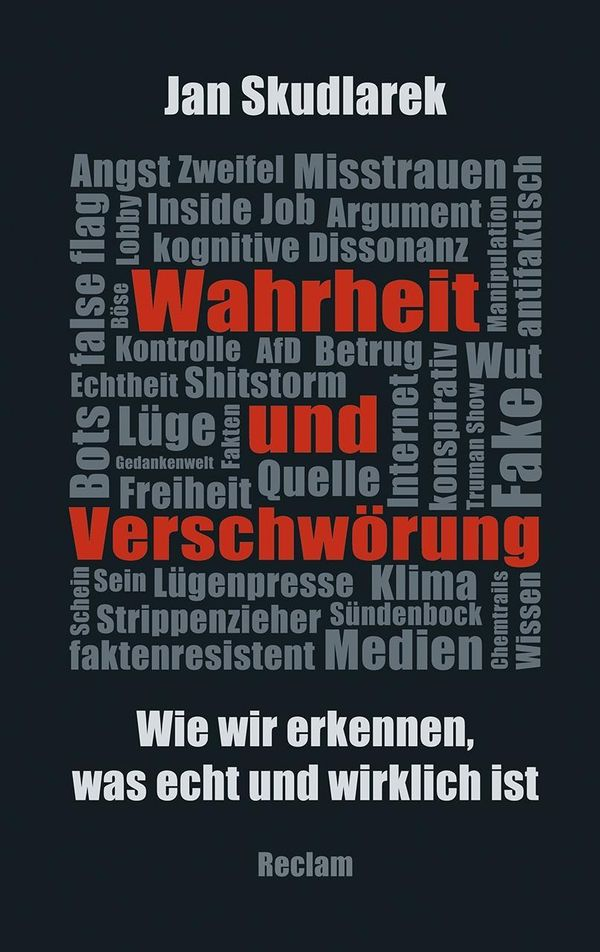
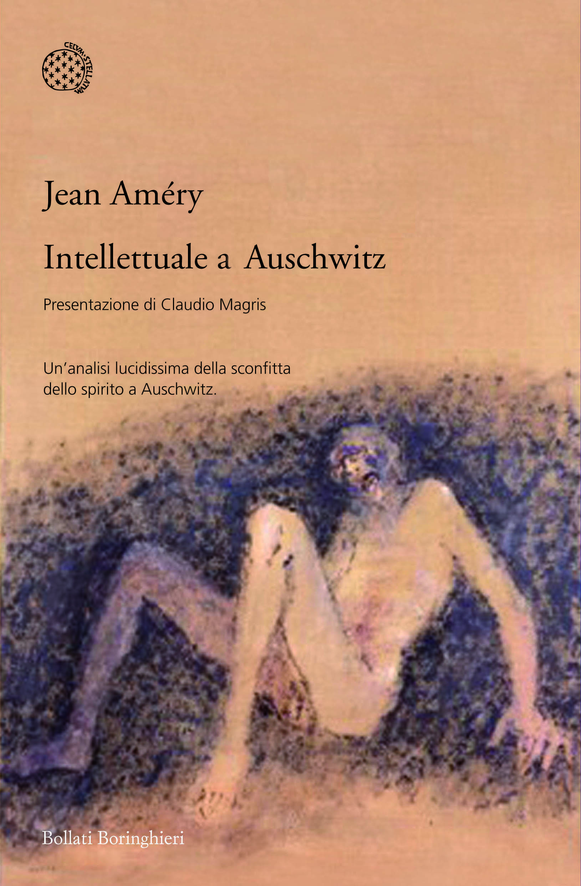

23:29 · 3 OPERE
Considerazioni en passant sull'assoggettamento della cultura.
Il filo del discorso
L’incontro in libreria con un saggio di Jan Skudlarek apre una riflessione sul rapporto fra verità, cospirazione e linguaggio. Dr Divago critica il volume e richiama la neolingua di 1984 per discutere come le parole possano orientare il giudizio. La riflessione passa alle differenze fra accettare l’esistente e immaginare alternative, anche attraverso un richiamo ad Améry. Il termine cospirazione è poi distinto, nel discorso, dalle ipotesi fantasiose con cui viene talvolta associato. Alcuni esempi politici e storici servono al relatore per chiedere attenzione alle prove e ai contesti. Il finale ribadisce la sua idea della cultura come dialogo capace di contrastare l’autorità e le spiegazioni già confezionate.
I libri nel discorso

Wahrheit und Verschwörung. Wie wir erkennen, was echt und wirklich ist
Note sul riferimento
Copertina: Reclam · cartonato · 2019
Immagine autentica dell’opera, controllata visivamente; l’edizione di riferimento non è attribuita al filmato.
Titolo e sottotitolo letti nell’apertura; il cognome è pronunciato nel finale e normalizzato attraverso la bibliografia dell’autore.

1984
Note sul riferimento
Copertina: Newton Compton · edizione illustrativa
Orwell e 1984 sono nominati nel ragionamento sul controllo del linguaggio.

Intellettuale a Auschwitz
Identificazione probabile
Note sul riferimento
Copertina: Bollati Boringhieri · Varianti · 2011 · traduzione di Enrico Ganni
Immagine autentica dell’opera, controllata visivamente; l’edizione di riferimento non è attribuita al filmato.
Améry è richiamato con il tema dei limiti del pensiero ad Auschwitz senza il titolo del volume: collegamento probabile.